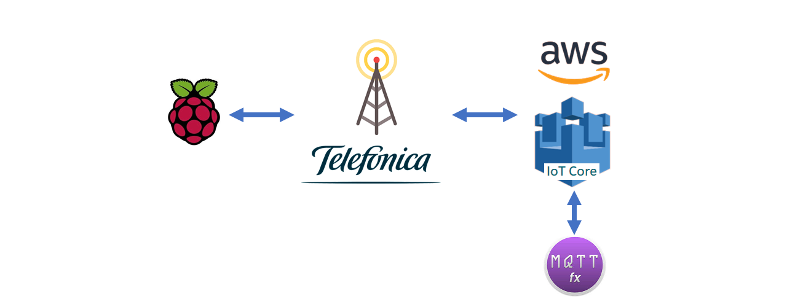
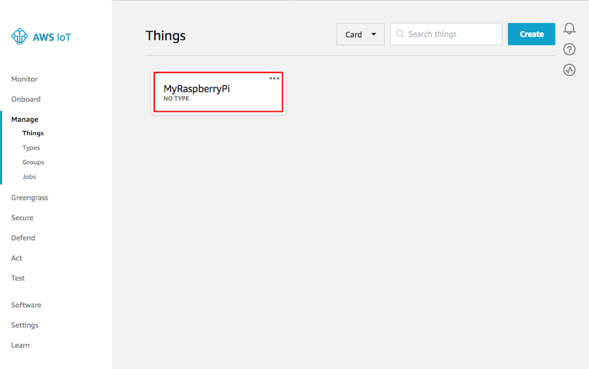
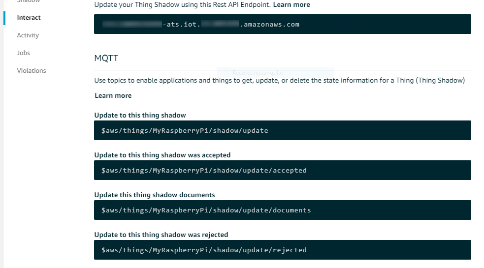
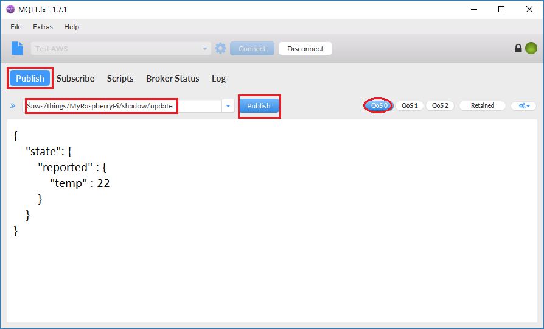

Table of Contents
Raspberry: Sense-HAT to AWS-IoT
For this project, we will sample the different sensors included on the board and publish their values in AWS. You will also be able to send different commands from the MQTT.fx interface that will be received on your Raspberry.
The Sense HAT will take measurements of your sensors by publishing them in the shadow, showing them also in the LED display.

Getting started with the Sense HAT
The Sense HAT is an add-on board for the Raspberry Pi. The board allows you to make measurements of temperature, humidity, pressure, and orientation and display information using the LED matrix.
Installing and using your Sense HAT is easy, just follow our tutorial below to get started!

What will you learn?
- Control the Sense HAT using Python
- Register a device on AWS
- Generate credentials for AWS
- Take measurements and display them in the LED matrix
- Establish a communication with AWS using MQTT
- Send commands to the device remotely
What will you need?
- Complete successfully the Raspberry Pi Starterkit tutorial
- Raspberry Pi with Raspbian
- Raspberry Pi Sense HAT
- Keyboard and monitor or SSH connection
- AWS account
- Telefónica SIM
If you have successfully completed the Raspberry Starterkit tutorial, all the necessary software is already updated.
First of all, you should know that you are going to manage your Sense HAT using Python. If you have any questions about how to run your code, you do not forget to visit our tutorial for Raspberry or click on the image


Create Raspberry Pi thing in AWS-IoT
-
Sign in to the AWS Management Console and then open the AWS IoT console at https://console.aws.amazon.com/iot
-
Go to the Monitor page. In the left navigation pane, choose Manage, and then select Things.

- You don’t have any things yet. Choose Register a thing.

- On the Creating AWS IoT things page, choose Create a single thing.

- Enter a name for the device, leave the default values for all the other fields, and then choose Next.

- Now generates the certificates.

- Download your public and private keys, your certificate, and the root certificate authority (CA) on your PC, copy the content into a file and call it for example AmazonRootCA1.pem

- For download your root certificate authority a new window is open for select a CA to download

-
Don’t forget to save these files, you need them to establish the connection
-
Returns to the previous window and Activate
-
Select Attach a policy
- Close this window, before you need to create and attach a new policy to the certificate

-
Open the AWS IoT console again https://console.aws.amazon.com/iot
-
In the left navigation pane, choose Secure, and then choose Policies.
-
Select Create a Policy

- Enter a Name for the policy:
- Action enter iot:*
- Resource ARN enter *
- Effect choose Allow Select Create. This policy allows your Raspberry Pi to publish messages to AWS IoT.

- In the AWS IoT console, choose Manage, Things. On the Things page, select your Thing

- On the thing’s Details page, in the left navigation panel, choose Interact. Make a note of the REST API endpoint. You need it to connect to your device shadow. It is the Broker Address for MQTT connection.

- Now select Security, and choose the certificate that you created earlier.

- In Actions, choose Attach policy

- Select your new policy and then choose Attach


What is MQTT
MQTT is a machine-to-machine (M2M)/”Internet of Things” connectivity protocol. It was designed as an extremely lightweight publish/subscribe messaging transport.
The first concept is the publish and subscribe system. A device can publish a message on a topic, or it can be subscribed to a topic to receive messages
AWS use this system to communicate with your devices.
Access to IoT Core in AWS Management Console and go to the left navigation pane. Select Manage, and then choose Things.
When you pick a thing you can find out the different topic that you can subscribe/publish
Select Interact to inspect them.
📍 Don’t forget to copy also the Rest API, you will need it as a broker address.

At the moment, you only need to know three topics:
- Publish in this topic to update the thing shadow
$aws/things/MyRaspberryPi/shadow/update - Subscribe to this topic to check if the report was accepted
$aws/things/MyRaspberryPi/shadow/update/accepted - Subscribe to this topic to check if the report was rejected
$aws/things/MyRaspberryPi/shadow/update/rejected

How to communicate with AWS
As you know, when you register a new device in AWS, his reserved Topics are created by default, You can use these topics for send data and receive information from the shadow.
For the time being, you only need to know a couple of them:
- topic Update
$aws/things/MyRaspberryPi/shadow/updatethis topic is where you publish the status of the device for update the shadow, in this tutorial this information is composed of values sent by the Raspberry with the label reported
You’ll also use the topic to communicate the desires to the shadow. you must publish in the shadow like the Raspberry, but using the label desired. In this case we use MQTT.fx to communicate these desires to AWS and to report the change to the device.
- topic Delta
$aws/things/MyRaspberryPi/shadow/update/deltaThis is the channel that AWS uses to communicate to the device the difference between the reported status and the desired status. It is necessary that the device is subscribed to the topic.
All these status are recorded in the shadow of the device. To check the current status, you should access the AWS IoT core as we taught you at the previous section.
Here you have an example:
{
"desired": {
"command": {
"val": "Caution",
"colour": {
"r": 0,
"g": 255,
"b": 255
}
}
},
"reported": {
"command": {
"colour": {
"r": 0,
"b": 255,
"g": 255
},
"val": ""
},
"temp": {
"colour": {
"r": 143,
"b": 0,
"g": 0
},
"val": 35.861732482910156
},
"humidity": {
"colour": {
"r": 0,
"b": 65,
"g": 0
},
"val": 32.788143157958984
}
},
"delta": {
"command": {
"val": "Caution"
}
}
}
As you can read in the above example, there are three main keys:
- “desired”: It contains the desired state sent from the MQTT.fx
- “reported”: It contains the status information reported by the device
- “delta”: It contains the differences between the reported status and the desired status. This is the information that is published in the delta topic.


Test your Certificates with MQTT.fx
One of the best ways to make sure that certificates had been created correctly, it is to try connecting via a MQTT client with graphical interface.
We recommend you download MQTT.fx from the following link https://mqttfx.jensd.de/
- Open MQTT.fx and create a new connection.

- Configure the broker as shown in the image below. Remember to use the files you downloaded in the previous step. And configure the broker address associated to your device.

- Now that you are connected to the broker, you need to subscribe to the topics accepted and rejected.
When a message is published, you can check in these topics if the message has been accepted or rejected.
$aws/things/MyRaspberryPi/shadow/update/accepted
$aws/things/MyRaspberryPi/shadow/update/rejected

- To update your device’s shadow, you should publish in the topic the following json file, you can use the following link to validate it https://jsonlint.com/
{
"state": {
"reported" : {
"temp" : 22
}
}
}
This example simulates the publication of temperature measurements made by the device.

- Select the topic to update your shadow.
Be sure to select the service quality level as QoS 0, amazon doesn’t allow different police.
$aws/things/MyRaspberryPi/shadow/update

- If you want to delete the shadow’s document publish the next json file
{ "state": null } - Play with this, sending different values until you understand how it works.
👍 Remember to check if your values has been accepted or rejected

How to Start with the project
We will explain it to you later in detail. but in this tutorial, first you need to be familiar with the following concepts
- Run a Python file on your raspberry
- Copy the credentials files to Raspberry
- Use MQTT.fx to post messages in a topic
- Review the shadow from AWS core
Execute the code in your Raspberry
At this point your raspberry won’t have any secrets for you. Nevertheless we will help you to continue so that you do not have any mishap.
Create a folder on your Raspberry’s desktop called Python and copy into it the following folder and copy in the CA folder the device’s certification files
Before, you need to edit the script configuration file.
# selection to the AWS connection from the connection file
Connection: AWS
#takes a measurement every x seconds
sample : 30
#Sense HAT board configuration
Sense_HAT:
temperature:
active: ok # enables/disables the taking of measurements
msg: temperature # text shown on the display
max: 100 # value with maximum light intensity
min: 0 # value with minimum light intensity
humidity:
active: ok
msg: humidity
max: 60
min: 0
pressure:
active: no
msg: pressure
max: 0
min: 0
acceleration:
active: no
msg: accel
max: 60
min: 0
You also need to edit the configuration file. Pay attention to configure your device and select for the connection to AWS as well as the topics and messages.
connection:
cloud: AWS #select your broker and the thing
things: "MyRaspberryPi"
broker: "xxxxxxxxxxxx-ats.iot.xx-xxxx-x.amazonaws.com"
port: 8883
Certificate: # identify the name of your files and the path
path: "CA/"
ca: "AmazonRootCA1.pem"
certificate: "xxxxxxxxxx-certificate.pem.crt"
private_key: "xxxxxxxxxx-private.pem.key"
topic: # copy here the list of topics
update: "$aws/things/MyRaspberryPi/shadow/update"
delta: "$aws/things/MyRaspberryPi/shadow/update/delta"
accepted: "$aws/things/MyRaspberryPi/shadow/update/accepted"
rejected: "$aws/things/MyRaspberryPi/shadow/update/rejected"
👍 Depending on Phyton’s interpreter version, there may be conflicts when accessing a library.
Install the libraries from your folder directory with the commands:
sudo pip install paho-mqtt
sudo pip install json
sudo pip install Pyaml

Send Command from MQTT.fx
The first thing you need to know is that MQTT.fx is a powerful tool that allows you to both communicate with AWS and monitor all communications between AWS and the device. Use it whenever you have a problem or simply verify the content of a post.
Connect with the broker and configure it for publish in update and subscribe to delta.
$aws/things/MyRaspberryPi/shadow/update
$aws/things/MyRaspberryPi/shadow/update/accepted
$aws/things/MyRaspberryPi/shadow/update/rejected
$aws/things/MyRaspberryPi/shadow/delta
If you subscribe to delta, you can review the content that AWS sends to your Raspberry. As a tip, you can subscribe to the topics accepted and rejected for check if the communication is established or the message is rejected by the broker.
Publish the following json file to send a command to your Raspberry. When the broker receives it, it will update the shadow of the device. Generating a delta message that will be used by your raspberry to update his status. Showing the command and RGB colour on the LED display.
Play trying new messages and colours. This can be very useful!
{
"state": {
"desired": {
"command": {
"val": "Warning",
"colour": {
"r": 250,
"g": 150,
"b": 0
}
}
}
}
}

Execute your project and enjoy!!
Execute the Script
Great! Now you can start running the script, with the following command:
sudo python Rasp_HAT_AWS.py
Another option is to configure your raspberry to run the script on power up
Open the cron Table with de command crontab -e and copy the next line in the file
@reboot ( sleep 60 ; /usr/bin/python2.7 /home/pi/Desktop/Rasp_HAT_AWS.py > /home/pi/Desktop/Rasp_HAT_AWS.log )
Check the Shadow state
Before starting the execution, you will see how your shadow is empty. With this script you can make temperature and humidity measurements in the board. This updated the shadow with each device shipment. It showing the same values as shown on the screen.
watch the LED screen
As you will be visualizing in your display, different messages are shown for the temperature and other sensor measurements varying the intensity of the luminosity according to the measured value, being able to modify even the message by the configuration file.
Sense_HAT:
temperature:
active: ok
msg: change-text-here # text shown on the display
max: 100 # value with maximum light intensity
min: 0 # value with minimum light intensity
The display is able to show up to different states, temperature, humidity, etc and one last state to visualize the received command.
Send a command
To send a command to the device, you must use the MQTT as we explained in the previous section by using the json that we provide. You can change both the message and the background colour using an RGB encoding (Red, Green, Blue).
You can change this instruction as many times as necessary.

Create your Dashboards
Now, you can collect the information from your devices. But reviewing the data from the Shadow can be a tedious task. The best option is to create a dashboard. It will allow you to visualize all the information.

There is a great availability of tools for this purpose. But some like freeboard, it can subscribe directly to the AWS topic. If you want to learn how, click in the next link.